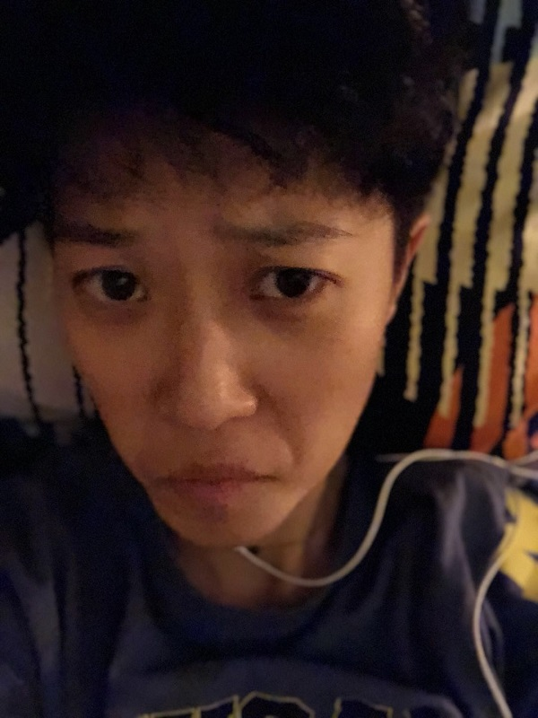
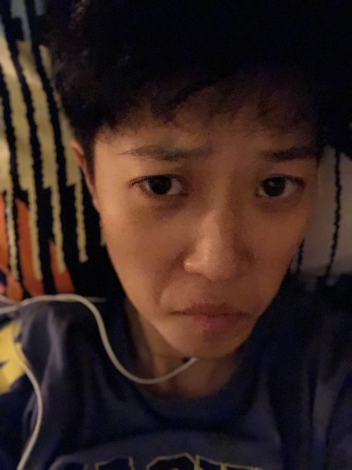
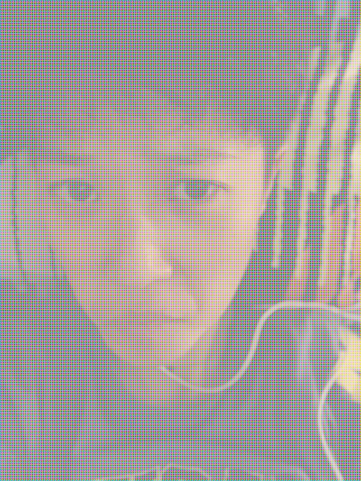

Problem Definition
This homework is to take a selfie and using openCV to convert it to a grayscale picture, flip it, and be creative for the 3rd picture. This homework's goal is for us to get familiar with basic opencv programming. The difficulty would be to figure out how to program in opencv as a new beginner.
Method and Implementation
To convert it to a grayscale picture, I used the method taught in class: average each pixel's RGB value.
For flipping the picture, I just go through each pixcl from the left and swap the pixel with the corresponding pixel from the right.
For the third part where we're supposed to be creative, I did it the similar way as what we did in lab1. The difference is that I change every pixel's rgb value based on which pixel it is, rather than turning all pictures into one channel.
It's just one or two lines of code, no algorithm used, simple math and simple code.
Experiments
I played around with picture for a few times just to get familiar with what opencv can do and how to use those functionalities for this homework.
Results
Original Image:
Results | ||
| GrayScale | Flipped | Cube Me |
|  |  | |
Discussion
- I believe that these are all basic functions in openCV. The result images are as expected. I hope that I could change pictures in more complex way and make the result pictures look complicated. Now I learn that some picture softwares are no magic, some features are just a few lines of code.
Conclusions
OpenCV is fun! Go CV!
Credits and Bibliography